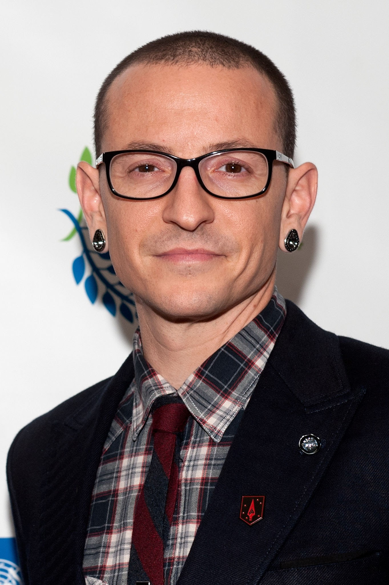
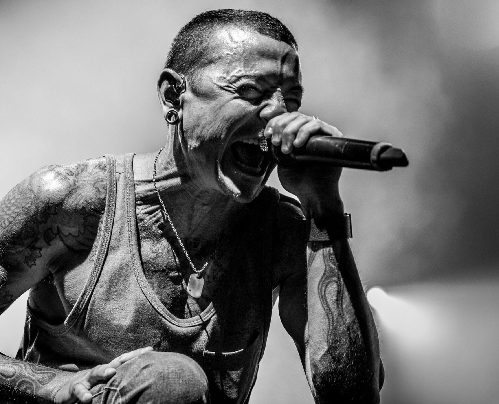

Chester Bennington, a talented and iconic musician, touched the hearts of millions with his
powerful vocals and emotionally charged lyrics. As the frontman of Linkin Park, he became a symbol of
resilience, honesty, and vulnerability.
Tragically, on July 20, 2017, the world lost a true musical legend when Chester took his own life.
Born on March 20, 1976, in Phoenix, Arizona, Chester Charles Bennington faced numerous struggles during his
early years. He experienced the anguish of a broken home, abuse, and addiction, which would later become
significant themes in his songwriting. Despite his troubled upbringing, music served as an escape for
Chester, and he channeled his pain into creativity, giving birth to the voice that would resonate with
millions across the globe.

In the late 1990s, Chester joined the band Xero, which later evolved into the renowned Linkin Park. With
the release of their debut album "Hybrid Theory" in 2000 , the world was introduced to Chester's
unmistakable voice. The album was a resounding success, resonating with a generation of music lovers.
Chester's hauntingly emotive performances
, coupled with the band's unique fusion of rock, alternative, and electronic sounds, struck a chord with
listeners worldwide.
"When life leaves us blind, love keeps us kind"
One of Chester Bennington's most significant contributions was his unapologetic vulnerability. He fearlessly
bared his soul in his lyrics,
discussing topics like depression, addiction, and personal struggles.
By doing so, he shattered the stigma surrounding mental health and opened up conversations about these
crucial issues.
His music became a lifeline for countless individuals, offering them solace, understanding, and a sense of
belonging.
Throughout Linkin Park's discography, Chester's raw and passionate vocals carried messages of hope,
perseverance, and self-discovery. Songs like "In the End," "Numb," and "Crawling" showcased his ability
to connect with listeners on a profound level.
He was an advocate for mental health, using his platform to raise awareness and encourage people to seek
help when they needed it most.

Chester's artistic talent extended beyond Linkin Park. He collaborated with various artists and bands,
expanding his musical
horizons and leaving a mark in different genres. Notably, he fronted the Stone Temple Pilots for a
brief period, honoring the
late Scott Weiland while bringing his own flair to the legendary band's catalog.
Chester Bennington's impact on music and the lives of his fans is immeasurable. His untimely death was a
devastating blow to the music community,
but it sparked important conversations about mental health, empathy, and the need for support systems.
His memory lives on through the
Linkin Park songs that continue to resonate with new generations and through the numerous tributes,
memorials, and fan gatherings that honor his legacy.